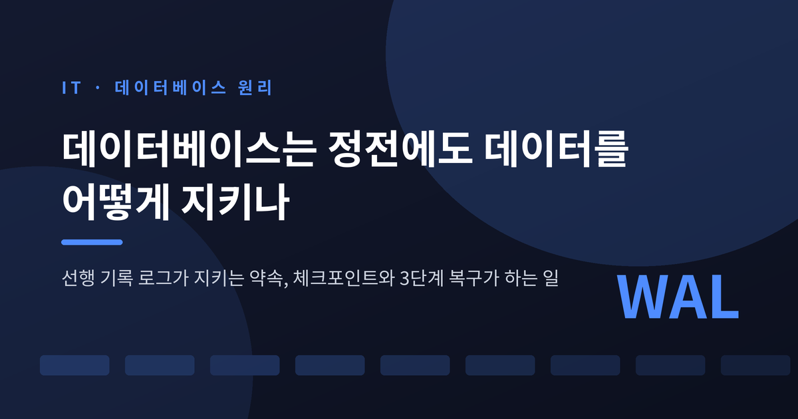
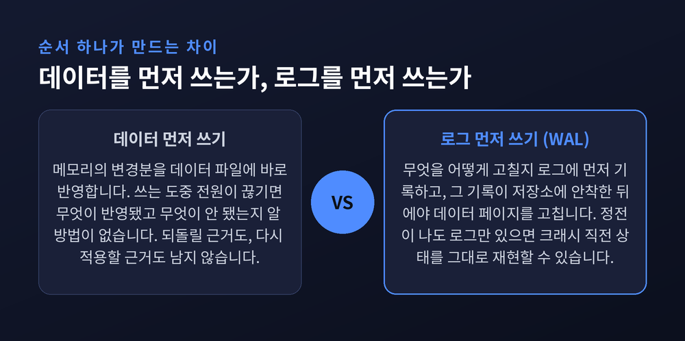
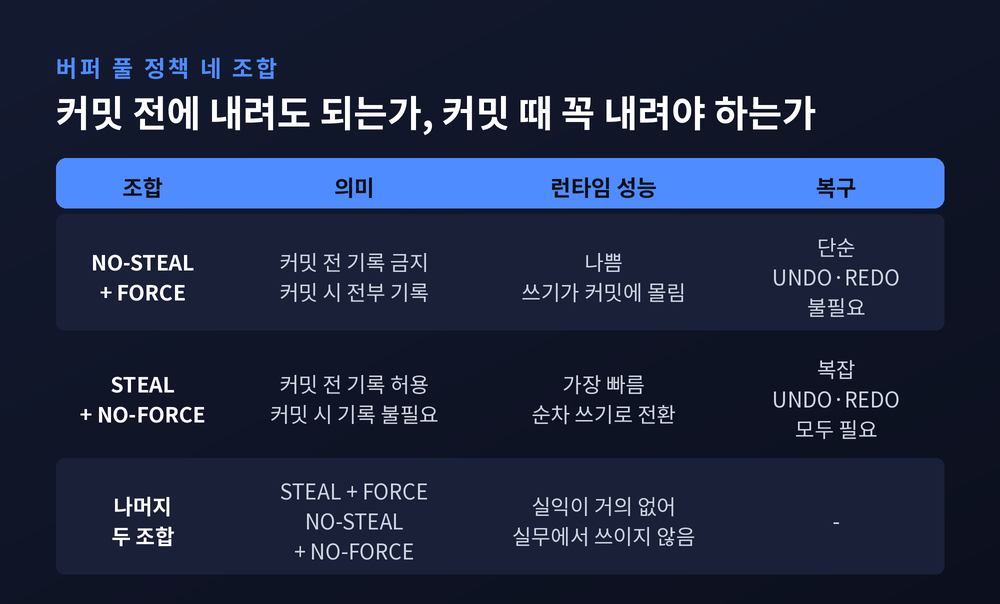
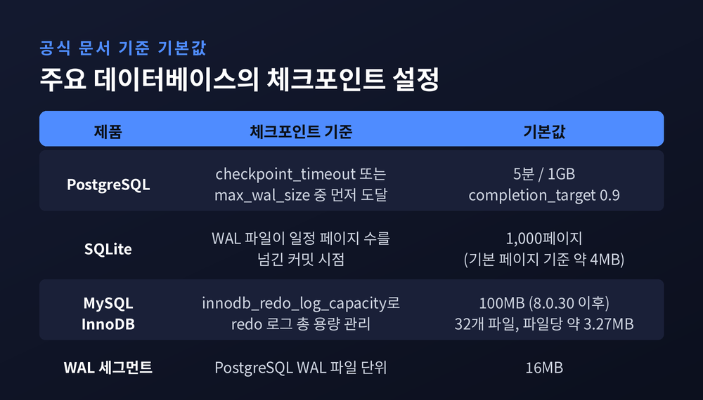
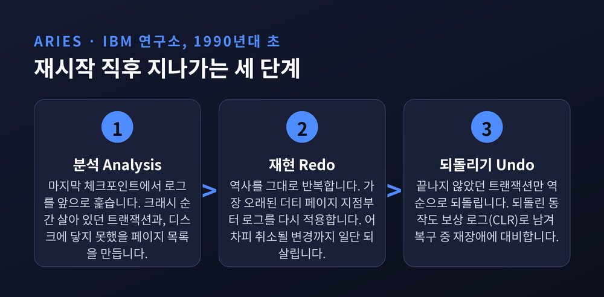
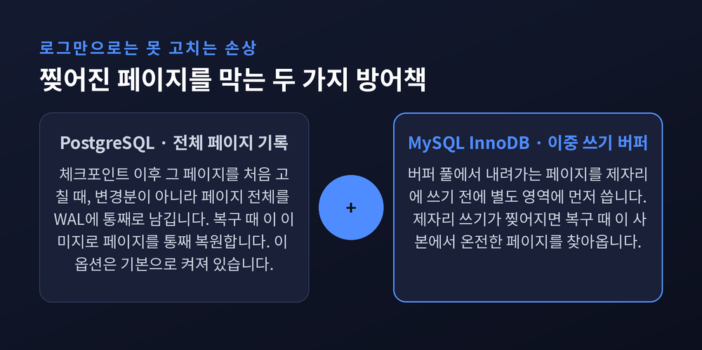
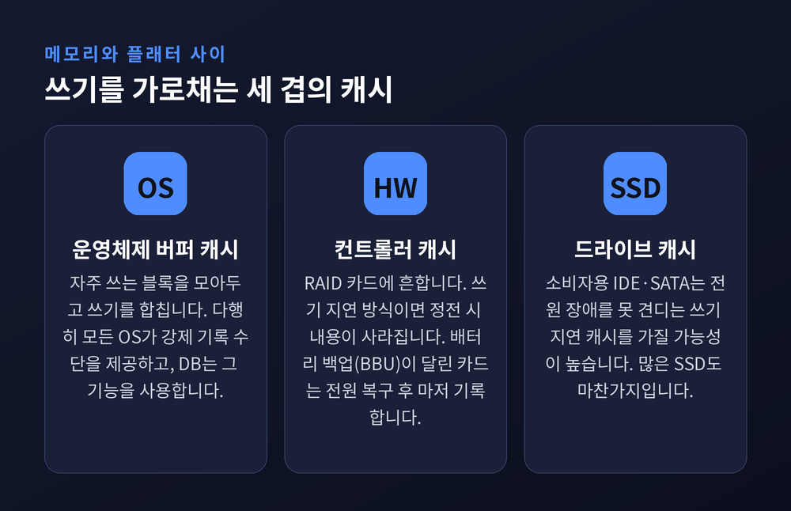

선행 기록 로그가 지키는 약속, 체크포인트와 3단계 복구가 하는 일
이번 글에서는 데이터베이스가 갑작스러운 정전을 견디는 방식을 정리해 보겠습니다.
핵심은 WAL, 우리말로 선행 기록 로그입니다. 여기에 체크포인트와 3단계 복구가 어떻게 맞물리는지까지 함께 살펴보겠습니다.


PostgreSQL 공식 문서는 WAL의 중심 개념을 한 문장으로 못박습니다.
데이터 파일에 대한 변경은 그 변경을 서술하는 WAL 레코드가 영구 저장소로 기록된 뒤에만 쓰여야 한다는 것입니다.
순서를 뒤집었을 뿐인데 결과가 달라집니다.
이 절차를 지키면 커밋할 때마다 데이터 페이지를 디스크로 내릴 필요가 없습니다. 크래시가 나더라도 로그에서 다시 적용(REDO)하면 되기 때문입니다.
ARIES 알고리즘은 이 규칙을 숫자로 표현합니다.
모든 로그 레코드에는 전역에서 유일하고 단조 증가하는 번호(LSN)가 붙습니다. 각 데이터 페이지는 자신을 마지막으로 고친 로그의 번호(pageLSN)를 품고 있고, 시스템은 디스크에 기록을 마친 마지막 번호(flushedLSN)를 따로 기억합니다.
페이지를 디스크에 쓰려면
pageLSN ≤ flushedLSN이어야 한다.
이 부등식 한 줄이 정전으로부터 데이터를 지키는 계약입니다.
로그를 한 번 더 쓰는데도 전체 쓰기 비용은 오히려 줄어듭니다. 이유는 세 가지입니다.
버퍼 풀 정책으로 보면 WAL은 STEAL과 NO-FORCE를 함께 택한 시스템입니다.
STEAL은 아직 커밋되지 않은 변경도 디스크에 미리 내려도 된다는 뜻이고, NO-FORCE는 커밋 시점에 굳이 내리지 않아도 된다는 뜻입니다.

반대편 선택지도 있기는 합니다. NO-STEAL과 FORCE를 택하면 복구가 아주 단순해집니다. 되돌릴 것도, 다시 적용할 것도 없으니까요.
다만 한 트랜잭션이 고쳐야 할 데이터 전부가 메모리에 들어가야만 실행할 수 있다는 치명적인 제약이 붙습니다. 커밋마다 쓰기가 몰려 SSD 수명도 빨리 깎입니다.
카네기멜런대 데이터베이스 강의는 이 대목을 이렇게 정리합니다.
"거의 모든 현대 DBMS가 WAL을 쓴다. 런타임 성능이 가장 빠르기 때문이다." 대신 로그를 재생해야 하므로 복구 시간은 더 걸린다는 단서도 함께 답니다.
WAL의 약점은 분명합니다. 로그 파일이 끝없이 커집니다.
수십 년을 무중단으로 돌아온 시스템이라면 로그만 페타바이트 단위로 쌓일 수 있습니다. 재시작할 때마다 그 전부를 재생한다면 복구는 사실상 불가능해집니다.
그래서 데이터베이스는 주기적으로 체크포인트를 찍습니다.
버퍼에 남아 있던 더티 페이지를 전부 디스크로 내리고, 특별한 체크포인트 레코드를 로그에 남기는 작업입니다. 이 지점 이전의 변경은 데이터 파일에 반영되어 있음이 보장됩니다. 덕분에 앞쪽 로그는 버려도 되고, 복구도 여기서부터 시작하면 됩니다.

실제 제품들의 기본값을 보면 설계 철학이 드러납니다.
PostgreSQL은 checkpoint_timeout 5분 또는 max_wal_size 1GB 중 먼저 도달하는 쪽에서 체크포인트를 시작합니다. 한꺼번에 쏟아지는 I/O를 막기 위해 쓰기를 시간에 걸쳐 분산하는데, 그 비율을 정하는 checkpoint_completion_target의 기본값은 0.9입니다. 다음 예정 시각 직전에 끝나도록 속도를 조절하는 셈입니다.
SQLite는 훨씬 단순합니다. WAL 파일이 1,000페이지, 기본 페이지 크기 기준으로 약 4MB에 도달하는 커밋 시점에 자동으로 체크포인트를 실행합니다. 그래서 대부분의 커밋은 아주 빠르고, 가끔 걸리는 한 번의 커밋만 눈에 띄게 느려집니다.
MySQL InnoDB는 8.0.30부터 innodb_redo_log_capacity 하나로 redo 로그 용량을 관리합니다. 기본값은 104,857,600바이트, 곧 100MB입니다. 이 용량을 32개 파일로 나눠 쓰므로 파일 하나는 약 3.27MB가 됩니다.
여기엔 정답이 없는 딜레마가 있습니다.
체크포인트를 자주 찍으면 복구는 빨라집니다. 재현할 로그가 적어지니까요. 그러나 더티 페이지를 자주 내리는 비용이 늘고, 뒤에서 이야기할 전체 페이지 기록 때문에 오히려 로그 양이 불어납니다. PostgreSQL 문서가 "체크포인트는 꽤 비싸므로 너무 자주 일어나지 않게 하라"와 "복구 시간이 걱정되면 간격을 줄이라"를 나란히 적어둔 이유입니다.
전원이 돌아와 데이터베이스가 올라오면, 화면에는 아무 일도 없는 듯 보입니다. 그 몇 초 사이에 세 단계가 지나갑니다.
IBM 연구소가 1990년대 초 DB2를 위해 만든 ARIES 알고리즘이 오늘날 표준이 된 그 절차입니다.

첫째, 분석(Analysis).
마지막 체크포인트 위치에서 시작해 로그를 앞으로 훑습니다. 이 과정에서 두 개의 표가 완성됩니다. 크래시 순간에 살아 있던 트랜잭션 목록과, 디스크에 미처 닿지 못했을 수 있는 페이지 목록입니다.
둘째, 재현(Redo).
"역사를 그대로 반복한다"가 이 단계의 구호입니다. 더티 페이지 중 가장 오래된 기록 지점부터 로그를 다시 적용해 크래시 직전의 상태를 그대로 되살립니다.
직관에 어긋나는 대목이 하나 있습니다. 어차피 취소될 트랜잭션의 변경까지 일단 전부 되살립니다. 상태를 한 번 정확히 복원해 두는 편이 알고리즘 전체를 훨씬 단순하게 만들기 때문입니다.
셋째, 되돌리기(Undo).
이제 크래시 시점에 아직 끝나지 않았던 트랜잭션만 골라 역순으로 되돌립니다. 이때 되돌린 동작 자체도 보상 로그 레코드(CLR)로 기록해 둡니다. 복구 도중에 또 정전이 나더라도 같은 일을 두 번 하지 않기 위해서입니다.
WAL이 만능은 아닙니다. 로그가 손대지 못하는 손상이 하나 있습니다.
디스크 플래터는 보통 512바이트 섹터 단위로 나뉘고, 물리적인 읽기·쓰기는 섹터 통째로 처리됩니다.
그런데 PostgreSQL은 한 번에 8,192바이트, 즉 16개 섹터를 씁니다. 이 쓰기 도중에 전원이 끊기면 어떤 섹터는 새 데이터로, 어떤 섹터는 옛 데이터로 남습니다. 한 페이지 안에 신·구가 뒤섞인 찢어진 페이지(torn page)가 됩니다.
행 단위 변경만 담은 로그로는 이런 페이지를 되살릴 수 없습니다. 기반이 되는 페이지 자체가 이미 깨져 있기 때문입니다.

해법은 제품마다 다릅니다.
full_page_writes). 체크포인트 이후 어떤 페이지를 처음 고칠 때, 변경분이 아니라 그 페이지 전체를 WAL에 통째로 기록합니다. 복구 시 이 이미지로 페이지를 통째 복원합니다. 기본값은 켜짐입니다.여기에 무결성 검사가 겹칩니다. PostgreSQL은 WAL의 개별 레코드마다 CRC-32C 체크섬을 붙여 기록하고, 크래시 복구·아카이브 복구·복제 때마다 검사합니다. WAL에 담긴 전체 페이지 이미지는 언제나 체크섬으로 보호됩니다.
여기까지가 잘 설계된 이야기입니다. 한계도 솔직히 적어두겠습니다.
메인 메모리와 디스크 플래터 사이에는 캐시가 세 겹 놓여 있습니다. 운영체제 버퍼 캐시, 디스크 컨트롤러 캐시, 그리고 드라이브 자체의 캐시입니다.
이 중 뒤의 둘이 쓰기 지연(write-back) 방식이면 전원이 끊기는 순간 내용이 통째로 사라집니다. PostgreSQL 문서는 소비자용 IDE·SATA 드라이브가 특히 그럴 가능성이 높고, 많은 SSD도 휘발성 쓰기 지연 캐시를 갖고 있다고 경고합니다.

문서의 결론은 담담합니다.
운영체제가 스토리지에 쓰기를 요청해도, 그 데이터가 진짜 비휘발 영역에 도착했는지 확인할 방법은 사실상 없다는 것입니다. 그러니 모든 저장 계층이 무결성을 보장하도록 만드는 일은 관리자의 책임이라고 못박습니다. 배터리 백업(BBU)이 달린 컨트롤러를 쓰거나, 드라이브 캐시를 끄거나, pg_test_fsync 같은 도구로 직접 확인하라는 조언이 뒤따릅니다.
설정으로 지속성을 스스로 낮추는 경우도 있습니다.
PostgreSQL의 synchronous_commit을 끄면 WAL이 디스크에 닿기 전에 커밋 성공을 돌려줍니다. 위험 구간의 최대 길이는 wal_writer_delay의 3배이고, 이 값의 기본은 200밀리초입니다. 다만 이 설정이 데이터베이스를 깨뜨리지는 않습니다. 최근 커밋 몇 건이 사라질 뿐, 상태는 그 트랜잭션들이 깨끗하게 취소된 것과 같습니다.
SQLite에서 PRAGMA synchronous를 NORMAL로 두면 커밋마다 하던 동기화를 건너뜁니다. 빨라지는 대신 전원 장애 뒤 트랜잭션이 롤백될 수 있습니다.
구현 자체에 흠이 남기도 합니다. 2026년 3월, SQLite 개발진은 WAL 모드에서 두 연결이 같은 순간 쓰기와 체크포인트를 시도할 때 발생하는 데이터 레이스 결함을 발견해 3.51.3에서 고쳤습니다. 2010년의 3.7.0부터 존재했던 것으로 추정되지만, 실험실에서 자연 발생으로 재현하지 못했을 만큼 조건이 까다로웠습니다. 개발진은 실제 발생률을 SSD 오작동이나 우주선 입자 충돌 수준으로 추정하면서도, 결과가 심각하니 업그레이드하라고 권합니다.
같은 로그가 다른 일도 합니다.
WAL을 계속 보관해 두면 이전 물리 백업 위에 원하는 시점까지만 재생해 되돌릴 수 있습니다. 시점 복구(PITR)입니다. 백업이 순간 스냅샷일 필요조차 없습니다. 백업이 만들어지던 그 시간대의 로그를 재생하면 내부 불일치가 저절로 교정됩니다.
스탠바이 서버가 받아 재생하면 복제가 되고, 외부 시스템이 구독하면 변경 데이터 캡처(CDC)가 됩니다. 데이터 웨어하우스와 마이크로서비스에 변경을 흘려보내는 그 파이프의 원류가, 원래는 정전을 대비해 만든 기록인 셈입니다.
정리하면 이렇습니다.
예전의 데이터베이스는 커밋할 때마다 데이터를 제자리에 밀어 넣느라 느렸습니다. 지금은 순서를 하나 바꾸는 것으로 그 비용을 걷어냈습니다. 고치기 전에 적어두고, 주기적으로 정산하고, 다시 켜지면 세 단계로 따라잡습니다.
결국 데이터베이스가 정전을 견디는 힘은 화려한 기술이 아니라 순서를 지키는 고집에서 나옵니다 — 먼저 적고, 그다음에 고친다.
그렇다면 이 약속만 믿어도 되겠냐고 물으신다면, 절반은 그렇다고 답하겠습니다. 나머지 절반은 그 아래 놓인 디스크가 정직한지에 달려 있습니다.
참고 소스